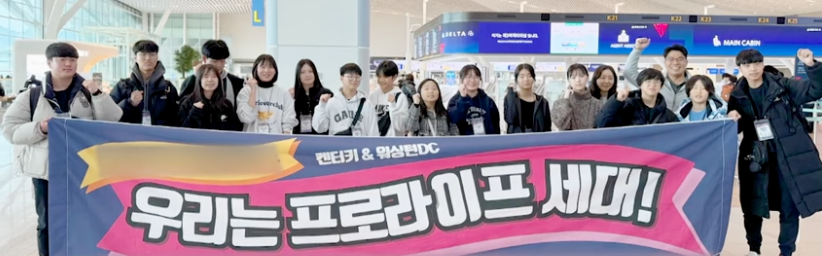

TIEUM ACADEMY
견미단 × 프로라이프
글로벌 프로젝트 아카데미 — 보수주의 가치관으로 세상을 바꾼다
📌 프로그램 소개
티움 아카데미 for 견미단 × 프로라이프는 글로벌 아웃리치 참여자들이 보수주의·생명윤리 등의 가치관을 재정립하고, 글로벌 인재로 성장하도록 설계된 사전·사후 교육 및 프로젝트 아카데미입니다.
글로벌 정치가·법률가·미디어 커뮤니케이터·NGO 설립가 4개 팀이 코치와 함께 미국 워싱턴 DC 현장에서 실전 프로젝트를 수행하고, 한국어·영어 산출물로 결실을 맺습니다.

📚 공통 교육 내용
보수주의
우리가 지켜야 할 소중한 가치들을 역사를 돌아보며 재해석·재정립 — 조평세 박사 (1776연구소)
생명윤리
도덕적 상대주의의 물결 속에서 올바른 가치관을 바탕으로 생명 존중의 가치를 내면화 — 서윤화 대표 (아름다운피켓)
정책과 법률
삶에 큰 영향을 미치지만 간과되어온 정치·법률·정책에 대한 실천적 도전 — 정소영 변호사 (세인트폴 세계관아카데미)
가치관 & 자연과학
균형 잡힌 세계관으로 세상을 바라보는 눈을 키우고 자연과학적 사고를 바르게 세우기 — 이동권 박사 (히즈어스)
🌐 4개 글로벌 프로젝트 팀
정치
글로벌 정치가
보수주의와 생명윤리 가치를 세우는 정치가 체험. 미국 현지에서 국회의사당 앞 스피치, March for Life 행사에서 인터뷰 수행.
법률
글로벌 법률가
보수주의와 생명윤리 관련 법·정책을 국가별로 비교 분석. 미국 현지에서 견학·토론·벤치마킹 후 법안 제안.
미디어
글로벌 미디어 커뮤니케이터
기자가 되어 미디어로 핵심 가치를 대중에게 전달. March for Life 참가자 인터뷰, 미국 정치가 인터뷰 수행.
NGO
NGO 설립가
한국의 Young Pro-Life 단체를 설립하여 미국 현지 단체와 동역 제휴. 운영 노하우를 배우고 귀국 후 임원·사업계획 등 조직 셋팅.
📅 교육 일정
1회
24.11.02(토) — 태백 국내투어 (공통교육)
오리엔테이션 · 팀 프로젝트 안내 · 태백 자연과학 탐방 (이동권 박사) · 생명윤리 강의 (서윤화 대표) · 보수주의 101 (조평세 박사)
2회
24.11.09(토) — 공통교육 (지정 교육장)
글로벌 정책과 법률 강의 (정소영 변호사)
3회
24.11.16(토) — 팀 프로젝트 및 중간 점검
양두수 대표 & 팀별 코치 진행. 팀 프로젝트 준비 워크숍.
4회
24.11.23(토) — 팀 프로젝트 & 중간 발표
팀별 중간 발표 및 피드백. 12월 한 달은 팀별 전담 코치와 자율 준비.
5회
25.01.11(토) — 프로젝트 최종 발표 (온라인)
팀별 최종 발표 및 피드백 → 미국 아웃리치 출발 준비 완료
현장
미국 아웃리치 — 워싱턴 DC (March for Life 포함)
팀별 프로젝트 현장 수행: 국회의사당 스피치 · March for Life 참가 · 현지 Pro-Life 단체 방문 · 인터뷰 · 법안 벤치마킹
사후
25.02.08(토) — 산출물 정리
포토북·리포트·영상 등 한국어·영어 산출물 완성. 개인별 비전·미션·드림 로드맵 정리.
수료
25.02.22(토) — 발표회 & 수료식
팀별 프로젝트 최종 발표 · 개인별 비전 발표 · 수료식
👨🏫 강사진 & 코치
양두수 대표
OT · 프로젝트 총괄 진행
이동권 박사
히즈어스 — 태백 국내투어 · 자연과학 강의
서윤화 대표
아름다운피켓 — 생명윤리 강의
조평세 박사
1776연구소 — 보수주의 101 강의
정소영 변호사
세인트폴 세계관아카데미 — 글로벌 정책과 법률 강의
📦 주요 산출물
팀 프로젝트 산출물 — 포토북 · 리포트 · 영상 (한국어 & 영어)
개인 산출물 — 나만의 비전 · 미션 · 드림 로드맵
교육 장소: 티움 라운지 (서울 서초구 효령로 57길 3, 종덕빌리지 B1)
🎬 관련 영상

▶ 클릭하면 유튜브에서 영상을 볼 수 있습니다
견미단 × 프로라이프 아카데미 참여 문의는 아래 연락처로 연락 주세요.
📞 02-522-2617 | 📧 johnchoi@tieum.org